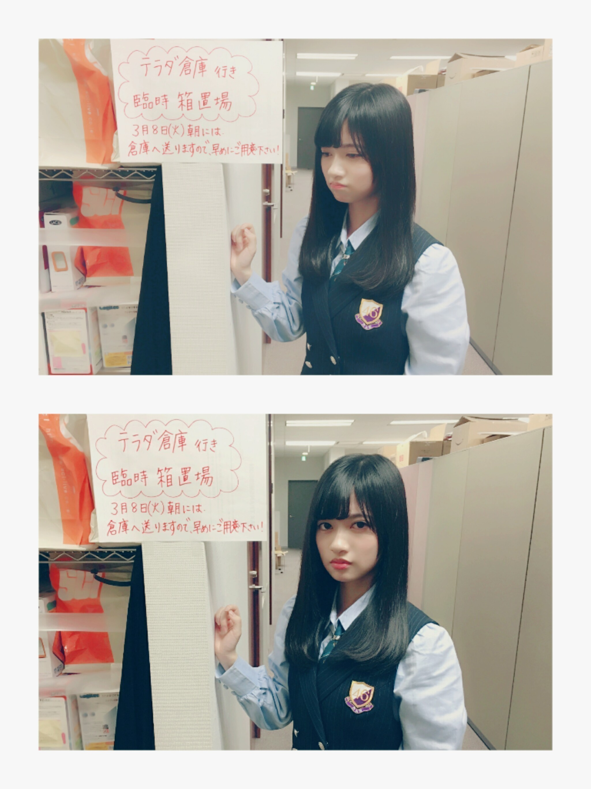

2016/0922Thuさせたい．
皆さんは最近、いい事あった？って聞かれたら
すぐ答えられますか？
この前、
「すみません。スナップ写真いいですか？」
って言われた時
それが私の最近あった
嬉しかった出来事ですm(._.)m
大きくなったら
私が良いと思った服を着て
それを認められたい
認められて雑誌の端っこに載りたい！
そんな高校生、専門学生になる予定でした！
人生何があるか分かりませんなーっと分かりつつも
改めて感じさせられました
でも、ほんと嬉しかったなm(._.)m
モバメでも送ったけど
チョーカー買いましたm(._.)m
太めの
あと、Guamで買った
紫ピンクな口紅です。
プライベートで使いづらい
実はこの間
久々にソロで雑誌の撮影が
ありました
いつも何をしても
自身が無くて
撮影も大好きですし
何より1番楽しい
でも、やっぱり自分に自身が持てなくて
でもでも、今日久々に撮影をさせて頂いてやっぱり好きな物は好きって言いたいって思えました！
そこに気づけたら
もう、怖いものなんてないはず！！
そして、名古屋全国握手会
ありがとうございました！
まあやさんとペアでした
YES Angel まあや！
今度ご飯行く約束。しちゃいました♫
こんなんで良かったら
行きましょー
あと、2日後
9月23日私お誕生日です
忘れられがちなので
図々しいかもですが
そっと、ここに書いときます、、、
17歳ありがとう
別に年なんて関係ない。
生きてればいい
他の国の人で年齢をざっくりしか知らない地域があります
だから、年なんてどうでもいい
最近良く言うんですが
なんでも勝手な先入観で
決められたくないし
決めちゃいけないなって！
18歳
とりあえず、生きていきます！
近々の目標としては
・制服を沢山着たい
・友達が欲しい
友達が欲しいは永遠の目標です
やっぱり沢山交流、人脈があると自分の見る世界、価値観が動かされる
いつも1人でどうにかしようって思っちゃうから
いつか、、、m(._.)m
テラダ倉庫行きらしい、、、（画像の字を読んで下さい）

倉庫になんて行かないから
アンダーライブ。
2016/09/22 07:36
コメント(649)
らんぜちゃん～
おはよーございます
らんぜちゃんのお誕生日にアンダーライブ行きます！
たくさんお祝いしますね！
ハッピーバースデーうちわも作ったので頑張って振るので見つけて欲しい～
頑張ってね
おはよーございます
らんぜちゃんのお誕生日にアンダーライブ行きます！
たくさんお祝いしますね！
ハッピーバースデーうちわも作ったので頑張って振るので見つけて欲しい～
頑張ってね
蘭世のおもいしろくて深いブログ好きです
蘭世アンダラ頑張って(*^o^*)
お誕生日おめでとう！
らんぜ頑張って！！！！！！！！！！！！！！！
らんぜ頑張って！！！！！！！！！！！！！！！
この写真、マジやばい！大人蘭世！最高です！
この写真、マジやばい！大人蘭世！最高です！
今度また握手会いくねー！
蘭世ー！
日曜の握手会行きますね！
ジェラピケ着て！
待っててね！
蘭世の勢いがとまらんぜ！
日曜の握手会行きますね！
ジェラピケ着て！
待っててね！
蘭世の勢いがとまらんぜ！
だいすきだいすきだいすき
アンダーライブ
大いにアピールしてね〜！
大いにアピールしてね〜！
お仕事お疲れ様です！
名古屋での握手会ありがとうね！
まだ早かったけど直接誕生日おめでとうって言えてよかった！岡山のアンダラは最高のライブにしたいから全力で応援するしおめでとうも大きな声で言うね！
まずは初日！広島公演がんばってね！
京都のシロクマあつき
名古屋での握手会ありがとうね！
まだ早かったけど直接誕生日おめでとうって言えてよかった！岡山のアンダラは最高のライブにしたいから全力で応援するしおめでとうも大きな声で言うね！
まずは初日！広島公演がんばってね！
京都のシロクマあつき
朝のブログめずらしいね！今日のブログの写真なんかすっごい大人っぽい！お誕生日ブログも楽しみに待ってます！あとは、全力でアンダーライブがんばってください！蘭世の勢いがとまらんぜっ
アンダーライブ広島と岡山に行きます٩(●˙▽˙●)۶
岡山の日は蘭世の誕生日だから特に楽しみ✧ \( °∀° )/ ✧
蘭世推しなんで見つけてくださいね( ･ㅂ･)و ̑̑
あとそろそろ友達になってください←
岡山の日は蘭世の誕生日だから特に楽しみ✧ \( °∀° )/ ✧
蘭世推しなんで見つけてくださいね( ･ㅂ･)و ̑̑
あとそろそろ友達になってください←
アンダラ頑張ってね^^*
おはようございます
こんにちは
こんばんは
朝起きて蘭世のこと考えてたらブログ更新された。
アンダーライブ頑張れ｡
これから絶対もっともっと沢山いいこと起こるといいね。
こんにちは
こんばんは
朝起きて蘭世のこと考えてたらブログ更新された。
アンダーライブ頑張れ｡
これから絶対もっともっと沢山いいこと起こるといいね。
ソロの撮影かー
早くみてみたいです！！楽しみにしてます(^^)
アンダラ頑張って下さい！
今回は行けないけど全力応援します(^O^)
早くみてみたいです！！楽しみにしてます(^^)
アンダラ頑張って下さい！
今回は行けないけど全力応援します(^O^)
もうすぐ誕生日なんですね！
お祝いしたいですな(＾ｰ^)ノ
お祝いしたいですな(＾ｰ^)ノ
いいことあるとやっぱり嬉しいよね！
アンダーライブ頑張ってね！
アンダーライブ頑張ってね！
誕生日ちゃんと覚えてましたぜ☆d(´∀｀*)
色々悩む事も多いと思うけどこれからも応援していきますよん(ﾉω｀*)んふふ♪
アンダーライブも頑張ってね！
色々悩む事も多いと思うけどこれからも応援していきますよん(ﾉω｀*)んふふ♪
アンダーライブも頑張ってね！
最近モバメとったよー！
アンダラ岡山には生誕T着て行きます！
アンダラ岡山には生誕T着て行きます！
蘭世ちゃん！
ブログありがとう！！
何か嬉しいことがあったのかな？
それは僕にとっても嬉しいことです！！
あと、自信かな？笑
蘭世ちゃんにもっともっと、自信をつけさせられるようにたくさん応援します！
大好きです！
ブログありがとう！！
何か嬉しいことがあったのかな？
それは僕にとっても嬉しいことです！！
あと、自信かな？笑
蘭世ちゃんにもっともっと、自信をつけさせられるようにたくさん応援します！
大好きです！
ブログ更新お疲れサマンサ！
9/23の蘭世の誕生日は岡山のアンダラで祝ってくれるだろうけど先に言っておきます。お誕生日おめでとう〜！。そんな蘭世だから誕生日の日にブログ更新しそう笑
9/23の蘭世の誕生日は岡山のアンダラで祝ってくれるだろうけど先に言っておきます。お誕生日おめでとう〜！。そんな蘭世だから誕生日の日にブログ更新しそう笑
蘭世〜、おはよう
アンダーライブ行けないけど応援してるね。楽しんできてね〜！
アンダーライブ行けないけど応援してるね。楽しんできてね〜！
久々のコメントになります！おはようございます！ ブログ更新おつかれさまー(^^) いよいよアンダーライブやなぁー
おれは山口のやつ行かせてもらいます！！ 赤白サイ光らせて楽しむぜ(､ﾝ､) 蘭世も3日間楽しんで(^^) でわ！！
おはよう！
今日のアンダーライブ行くよ！
ちょっと早いけど蘭世のお祝いできたらたまらんぜ←
生きているだけでいいんだよ、きっと。
僕の友達は2年前に18歳で亡くなったから、余計にそう思う。
当たり前のことが幸せなんだよね。
普段は気づかないけど。
誕生日ってそんなことに気づくことができる特別な日だって思ってます。
誕生日は、生まれてきてくれてありがとう、生きていてくれてありがとう、これからも長生きしてねって想いを伝える日だってじいちゃんに言われたことを思い出した。
素敵な1年に、これからに繋がる1年に、そう願ってます！
アンダラ楽しみにしてるね！
今日のアンダーライブ行くよ！
ちょっと早いけど蘭世のお祝いできたらたまらんぜ←
生きているだけでいいんだよ、きっと。
僕の友達は2年前に18歳で亡くなったから、余計にそう思う。
当たり前のことが幸せなんだよね。
普段は気づかないけど。
誕生日ってそんなことに気づくことができる特別な日だって思ってます。
誕生日は、生まれてきてくれてありがとう、生きていてくれてありがとう、これからも長生きしてねって想いを伝える日だってじいちゃんに言われたことを思い出した。
素敵な1年に、これからに繋がる1年に、そう願ってます！
アンダラ楽しみにしてるね！
らんぜブログありがとーー
最近めっちゃ大人っぽくなってきてすごいかっこいい
最近めっちゃ大人っぽくなってきてすごいかっこいい
アンダラ行けないの辛いー
楽しんできてね
雑誌も絶対見るから
あと2日で誕生日か、おめでとう
では、
楽しんできてね
雑誌も絶対見るから
あと2日で誕生日か、おめでとう
では、
更新ありがとー！
明日の岡山公演は京都のしろくまあつきと連番するよー！
遠いけど見つけてくれたら嬉しいな(´°v°)/んぴｯ
たぁちゃん⊿
明日の岡山公演は京都のしろくまあつきと連番するよー！
遠いけど見つけてくれたら嬉しいな(´°v°)/んぴｯ
たぁちゃん⊿
ブログ更新ありがと！
俺も最近洋服が好きで好きでたまらないです(._.)握手会でお話できたらいいなぁ〜
アンダーライブ自分はいけませんが遠くから応援してます(;_;)頑張ってね！
25日の握手会楽しみです♪
俺も最近洋服が好きで好きでたまらないです(._.)握手会でお話できたらいいなぁ〜
アンダーライブ自分はいけませんが遠くから応援してます(;_;)頑張ってね！
25日の握手会楽しみです♪
おはおは！
いいことね、、、
最近は結構あったよ♪
小さなことでもいいことはいいことって感じるようにしてる！
なんかチョーカーつけてるとペットみたい笑
4日間体調崩さず楽しんでいきましょう(๑′ᴗ‵๑)
いいことね、、、
最近は結構あったよ♪
小さなことでもいいことはいいことって感じるようにしてる！
なんかチョーカーつけてるとペットみたい笑
4日間体調崩さず楽しんでいきましょう(๑′ᴗ‵๑)
おはようございます！
倉庫には笑いました。
自信持って行きましょう！って言うか、そういう自信の無さも寺田さんの魅力ではありますよね。
倉庫には笑いました。
自信持って行きましょう！って言うか、そういう自信の無さも寺田さんの魅力ではありますよね。
らんぜ、おはよう。
名古屋全国握手会お疲れさまでした。
楽しくて何度かループしてしまいました。
約束通り本日からのアンダラ3公演に行かせていただきます。
楽しみにしてますね。誕生日公演もありますし。
現在、空港で飛行機待ち～。
名古屋全国握手会お疲れさまでした。
楽しくて何度かループしてしまいました。
約束通り本日からのアンダラ3公演に行かせていただきます。
楽しみにしてますね。誕生日公演もありますし。
現在、空港で飛行機待ち～。
アンダラ頑張ってね(^^)/ 残念ながら見に行けないけど、応援してる☆彡
蘭世さん！名古屋の全握で初めてお会いして「ちっちゃいですね」しか言えませんでした笑
二回目はおかえりーまたきたのーと言われてとても嬉しかったです！！！
16thの個握は是非行きたいと思いました
蘭世おしになりました！
二回目はおかえりーまたきたのーと言われてとても嬉しかったです！！！
16thの個握は是非行きたいと思いました
蘭世おしになりました！
らんぜ◎おはようございます
ブログ更新ありがとう( ＾ν＾)
テラダ～！「自身」じゃなくて「自信」かな？？たぶん！
スナップ声かけられたのか～～～
何の雑誌なのか気になる・こんどその時に着てたお洋服紹介してね！
あと２日でお誕生○
忘れてるわけないじゃないですか！
17歳のらんぜちゃんにはたくさんお世話になりました、18歳のらんぜちゃんもよろしくおねがいします(*^_^*)
アンダーライブ行くことは出来ないけど、遠くから見守っています
安全第一ケガなしで
ファンはお友達にはなれないことが残念です(´･_･`)テラダちゃんと同性で同い年でもそのことにいつも気付かされると悲しい気持ちになる。。らんぜちゃんはお友達として出会いたかった唯一のアイドルさん
では！またね！
ブログ更新ありがとう( ＾ν＾)
テラダ～！「自身」じゃなくて「自信」かな？？たぶん！
スナップ声かけられたのか～～～
何の雑誌なのか気になる・こんどその時に着てたお洋服紹介してね！
あと２日でお誕生○
忘れてるわけないじゃないですか！
17歳のらんぜちゃんにはたくさんお世話になりました、18歳のらんぜちゃんもよろしくおねがいします(*^_^*)
アンダーライブ行くことは出来ないけど、遠くから見守っています
安全第一ケガなしで
ファンはお友達にはなれないことが残念です(´･_･`)テラダちゃんと同性で同い年でもそのことにいつも気付かされると悲しい気持ちになる。。らんぜちゃんはお友達として出会いたかった唯一のアイドルさん
では！またね！
おはよう！
広島にいるよ！今日の
ライブ楽しみ！！
生誕シャツ着ます！
広島にいるよ！今日の
ライブ楽しみ！！
生誕シャツ着ます！
蘭世ちゃん、体調どうですか？僕はすこぶる普通です。アンダーライブが再開され、次作の楽曲制作など多忙なのは容易に想像できます。握手会などの過密日程で体調崩さないか心配であります。熱いハートの蘭世ちゃんは無理しがちなイメージなので休む時はしっかり休んでくださいね。体調不良の蘭世ちゃん見るのは「悲しいたけ」なので笑
それでは体調に気をつけて頑張って下さい。応援しています。
初コメントです！
じしんは自信ですよ！(笑)
でもわざと自身にしてるならすごく深いなぁと思ったりもして…(どっちだったのでしょう？)
自分を持つこと、ほんとに大事ですよね。
らんぜちゃんの独特の雰囲気すごい好きです(*´ω｀*)
お誕生日早いですがおめでとうございます＼(^o^)／
これからも応援してます！
じしんは自信ですよ！(笑)
でもわざと自身にしてるならすごく深いなぁと思ったりもして…(どっちだったのでしょう？)
自分を持つこと、ほんとに大事ですよね。
らんぜちゃんの独特の雰囲気すごい好きです(*´ω｀*)
お誕生日早いですがおめでとうございます＼(^o^)／
これからも応援してます！
アンダーライブ初日頑張ってね！
関東に住んでて中国地方は遠くて行けなかったけど、気持ちは中国地方に飛んでいきます笑
安全第一！
関東に住んでて中国地方は遠くて行けなかったけど、気持ちは中国地方に飛んでいきます笑
安全第一！
おはようございます
17歳の寺田さんありがとう
18歳の寺田さんよろしくお願いいたします
17歳の寺田さんありがとう
18歳の寺田さんよろしくお願いいたします
京都の全握に行きます、行きまくります(笑)
蘭世ブログありがとう〜
最近、良いことあった？って聞かれても、すぐ答えられないな
そういえば、１つあるよ
蘭世の生誕Tが届いたことかな(^^)
誕生日、明日だね‼︎
17歳の1年はどんなだったかな⁉︎
毎年だけど、明日から迎える18歳の1年間は前の1年よりも
よくなると良いね
蘭世の誕生日にせっかくアンダラがあるのに参加できないけど、
記念すべき日にあるライブを精一杯楽しんでね‼︎
日曜の握手会でちゃんと言葉で伝えるね
もちろん、生誕T着てくよ〜
早くどんな服が合うか決めないと（笑）
最近、良いことあった？って聞かれても、すぐ答えられないな
そういえば、１つあるよ
蘭世の生誕Tが届いたことかな(^^)
誕生日、明日だね‼︎
17歳の1年はどんなだったかな⁉︎
毎年だけど、明日から迎える18歳の1年間は前の1年よりも
よくなると良いね
蘭世の誕生日にせっかくアンダラがあるのに参加できないけど、
記念すべき日にあるライブを精一杯楽しんでね‼︎
日曜の握手会でちゃんと言葉で伝えるね
もちろん、生誕T着てくよ〜
早くどんな服が合うか決めないと（笑）
拝啓
寺田蘭世様
最近の良いことは、蘭世が１８歳になり日が近づく事かな！
１８歳になる蘭世を早く見たいし、これからも頑張って欲しいです。
そして、１７歳の蘭世に感謝します。
凄く頑張ってくれてありがとう。
アンダーライブ頑張ってください。
２５日は、蘭世推しは直接おめでとう言ってあげられる。握手会だよ。
本当に、蘭世ありがとう。乃木坂で出会えて良かった。
寺田蘭世様
最近の良いことは、蘭世が１８歳になり日が近づく事かな！
１８歳になる蘭世を早く見たいし、これからも頑張って欲しいです。
そして、１７歳の蘭世に感謝します。
凄く頑張ってくれてありがとう。
アンダーライブ頑張ってください。
２５日は、蘭世推しは直接おめでとう言ってあげられる。握手会だよ。
本当に、蘭世ありがとう。乃木坂で出会えて良かった。
更新ありがとうございます／
いつもお仕事お疲れ様です(^-^)22
いきなりですが、今日、明日、明後日のアンダーライブ
怪我なく最高のパフォーマンスができるよう、頑張ってください！いつだって応援しています＼(^o^)／
頑張れ〜(o^^o)
蘭世ちゃん キートス！
いつもお仕事お疲れ様です(^-^)22
いきなりですが、今日、明日、明後日のアンダーライブ
怪我なく最高のパフォーマンスができるよう、頑張ってください！いつだって応援しています＼(^o^)／
頑張れ〜(o^^o)
蘭世ちゃん キートス！
蘭世ちゃーん いつもモバメありがとう
いつもモバメありがとう
みんな、友達だぞ！親友は難しいがな、、、。
がんば！
がんば！
チラッ！
少し久々にコメント致します。
>テラダ倉庫行きらしい、、、（画像の字を読んで下さい）
…この、上の表情、いいですね。
でも、いつの話？
半年前？？？
>テラダ倉庫行きらしい、、、（画像の字を読んで下さい）
…この、上の表情、いいですね。
でも、いつの話？
半年前？？？
らんぜブログ更新ありがとう！自分の大好きなことを楽しそうに一生懸命できるらんぜをみてずっと応援したいと思うよ！もっと自分に自信を持って良いと思う。らんぜの頑張ってる姿をはファンの人が必ず見てるから絶対これから自分の為になるし乃木坂の為にもなると思うよ❗️ずっと応援してるから頑張ろうね。アンダーライブも頑張れ


みんなでお祝いだね！